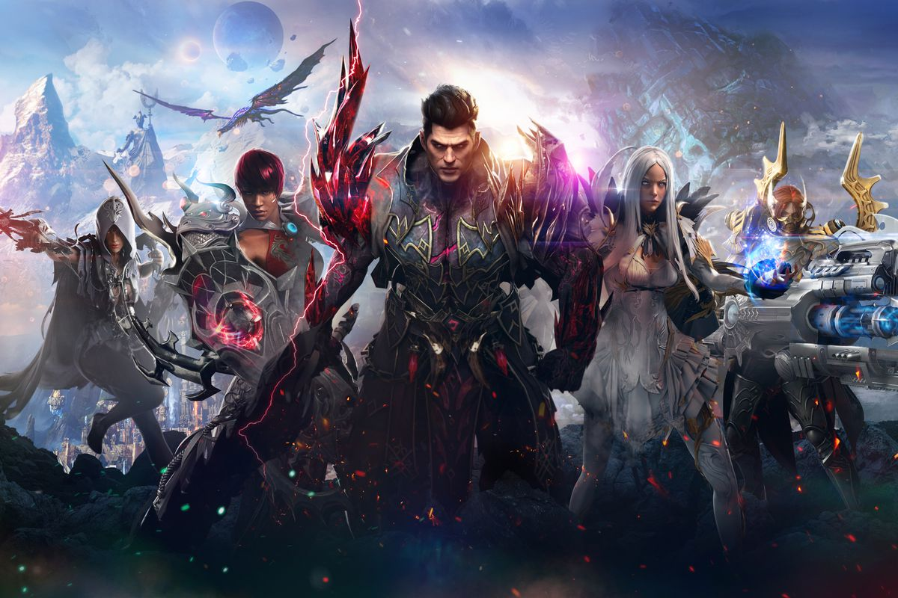
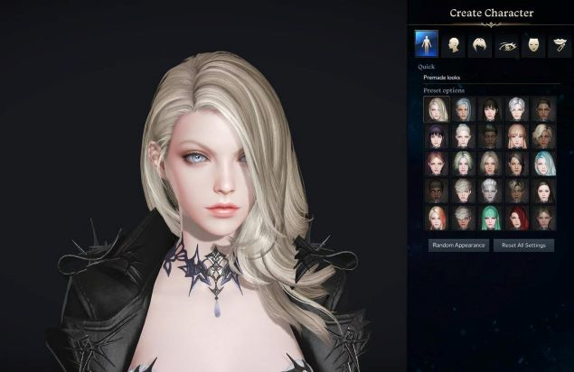
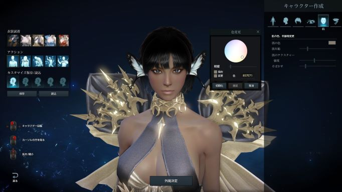
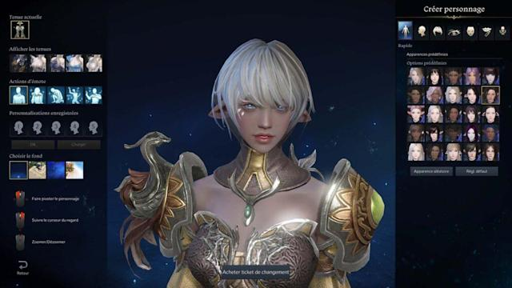
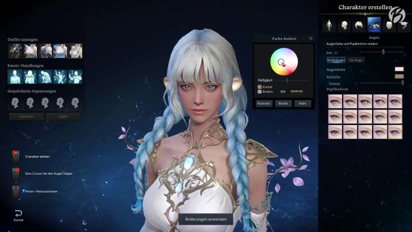
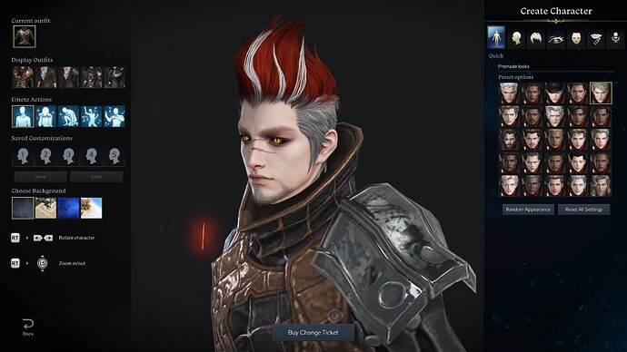
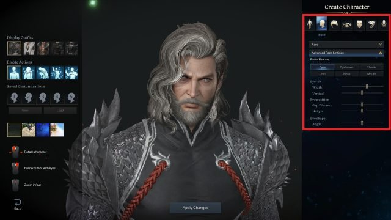

Lost Ark
The game that has taken the gaming world by storm

Lost Ark
Lost Ark is a fantasy massively multiplayer online action role-playing game (MMO-RPG). It was first developed and released in 2019 on Korean servers by the game development company Smilegate, but has since been released as a free to play game in North/South America and Europe by Amazon Games on February 11 2022 where it received an enormously positive reception. The biggest complaint about the game was the long time players would have wait in a queue to get into the game as servers became flooded almost immediately. On February 12, one day after release, the game had 1.3 million players online at a single time, putting it second in most concurrent players online at a single time on Steam. Subreddits began to pop up immediately where players could discuss their progress, help one another and find friends for the game. Due to the long queue times, many users took to giving the game negative reviews on Steam, in an effort to draw attention to the issue. Depending on which server the player picked, they potentially still face issues with this, as new servers have been created, but players cannot transfer their old characters onto new servers and would instead have to start from scratch. Players are hoping these issues see improvement in future. Despite the bombardment of negative reviews due to queue time, Lost Ark still has an over all postive score, ranking 81 percent on Metacritic, 8/10 on IGN, and mostly positive on Steam.
One of the best parts of Lost Ark is the storyline. During the introduction, the player receives a cut scene specific to the class the player chose. Then all players receive the main quest, of finding the Lost Ark (the very name of the game). The Lost Ark is an ancient artifact used by the King of Lutera, to overcome the demons in a war for the world. After that players find themselves upon a pirate ship, where they are informed that their quest is to assist a group, and a monk named Morpheus, in finding a treasure. The story progresses from there and combat is explained along the way. This main story grows as the player continues their quest across the world to find the pieces of the Lost Ark. At each map visited there are also smaller, unique stories along the way where the player will help characters in their own quests, thus allowing the player to become stronger.
This website exists as a school project, none of the images are owned by the author.
Character customization
|  |  |
|  |  |
|  |  |